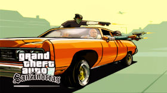

Grand Theft Auto San Andreas
Grand Theft Auto San Andreas mais conhecido como GTA SA, é um videogame de ação e mundo aberto lançado originalmente em 2004. Aqui não tem muito o que falar, esse jogo é um clássico e um marco de uma geração inteira com sua jogabilidade e imersão única.
Ano de Lançamento : 2004
